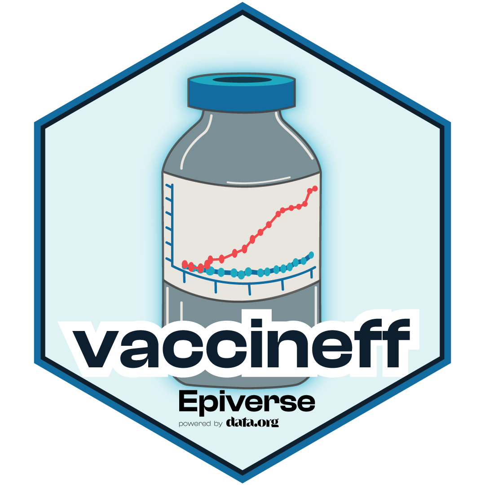

vaccineff: An R package with tools for estimating vaccine effectiveness and vaccine related metrics 
vaccineff is developed at Pontificia Universidad Javeriana as part of the Epiverse-TRACE initiative.
vaccineff is an R package that offers tools for estimating vaccine effectiveness, using a series of epidemiological designs including cohort studies, test-negative case-control, and screening methods (Halloran, Longini, and Struchiner 2010). The current version of the package provides a set of features for preparing, visualizing, and managing cohort data, estimating vaccine effectiveness, and assessing the performance of the models. Test-negative design and screening method will be included in future versions.
Installation
The current development version of vaccineff can be installed from GitHub using the pak package.
if(!require("pak")) install.packages("pak")
pak::pak("epiverse-trace/vaccineff")Quick start
vaccineff provides a minimal cohort dataset that can be used to test out the models.
# Load example `cohortdata` included in the package
data("cohortdata")
head(cohortdata, 5)
#> id sex age death_date death_other_causes vaccine_date_1 vaccine_date_2
#> 1 afade1b2 F 37 <NA> <NA> <NA> <NA>
#> 2 556c8c76 M 19 <NA> <NA> <NA> <NA>
#> 3 04edf85a M 50 <NA> <NA> <NA> <NA>
#> 4 7e51a18e F 8 <NA> <NA> <NA> <NA>
#> 5 c5a83f56 M 66 <NA> <NA> <NA> <NA>
#> vaccine_1 vaccine_2
#> 1 <NA> <NA>
#> 2 <NA> <NA>
#> 3 <NA> <NA>
#> 4 <NA> <NA>
#> 5 <NA> <NA>Package vignettes
More details on how to use vaccineff can be found in the online documentation as package vignettes, in the article “Get Started with vaccineff”.
Help
To report a bug or to request a new feature please open an issue.
Contribute
Contributions to vaccineff are welcomed. Contributions are welcome via pull requests.
Contributors to the project include:
Authors: David Santiago Quevedo and Zulma M. Cucunubá (maintainer)
Contributors: Geraldine Gómez, Pratik Gupte, Érika J. Cantor, Santiago Loaiza, Jaime A. Pavlich-Mariscal, Hugo Gruson, Chris Hartgerink, Felipe Segundo Abril-Bermúdez
Code of conduct
Please note that the vaccineff project is released with a Contributor Code of Conduct. By contributing to this project, you agree to abide by its terms.